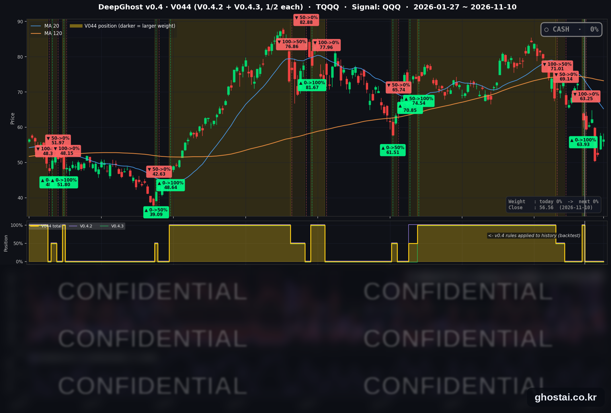

높은 CPI, 금리 급등에 나스닥 0.74% 하락
· Ghost.AI 데일리 리포트
👻 매일 시그널과 히스토리를 홈페이지에서 한눈에 → www.ghostai.co.kr
회원 페이지 안내 — 회원 가입하시면 공식 전략 v0.4의 TQQQ 비중과 판단 근거, 원본 차트, 분석 레포트를 매일 확인하실 수 있습니다. 회원 페이지는 블로그·유튜브보다 먼저 업데이트됩니다. 지금 베타 회원을 받고 있으며, 이메일과 필명만으로 가입하실 수 있고 서비스 사용료는 받지 않습니다. 이메일 확인 후 바로 이용하실 수 있습니다.
10월 소비자물가(CPI)가 전월 대비 0.4%, 근원 물가가 0.3% 올라 예상(0.3%·0.2%)보다 높았습니다. 10년물 금리는 11.9bp 오른 4.983% 로 9월 23일 이후 가장 많이 올랐고, 나스닥은 0.74%, S&P 500 은 0.38% 내렸습니다. 지수 하락은 대부분 개장 전에 났고, S&P 500 구성종목은 오른 종목과 내린 종목이 244개씩 같았습니다. VIX 는 19.46 으로 내렸습니다. TQQQ 는 1.77% 내렸고, 전략은 현금 보유 중입니다.
📊 오늘의 매매 신호
| 항목 | 내용 |
|---|---|
| 오늘의 신호 | 🟡 신규 신호 없음 — 전략은 현금 보유를 유지합니다 |
| 포지션 상태 | 💵 현금 보유 중 (OUT OF POSITION) |
| 현금 보유 기간 | 2026-11-02 ~ 2026-11-10 (7일, 11월 2일 시가 매도 후) |
| TQQQ 종가 | $56.56(-1.77%) |
TQQQ 시그널 — OUT OF POSITION
현재 상태: 현금 보유 중 | 11월 2일 시가 $63.25 매도

전략은 11월 2일(월) 시가 63.25달러에 TQQQ 를 매도한 뒤 현금 보유 중이고, 11월 10일에도 새 신호는 나오지 않았습니다. TQQQ 는 1.77% 내린 56.56달러로 마감해 매도가보다 10.58% 낮습니다.
오늘 미국 시장 — 시황 요약
지수 마감
| 지수 | 종가 | 등락률 |
|---|---|---|
| S&P 500 | 7,520.93 | -0.38% |
| 나스닥 종합 | 25,065.88 | -0.74% |
| 다우존스 | 52,231.89 | -0.30% |
| 러셀 2000 (IWM) | 280.58 | -0.68% |
| QQQ (나스닥100) | 674.76 | -0.68% |
| TQQQ | 56.56 | -1.77% |
CPI 는 개장 전 08:30 에 나왔습니다. 세 지수는 시가에 0.4~0.8% 낮게 출발한 뒤 장중에는 소폭 올라, 하루 하락분은 대부분 개장 전에 났습니다. S&P 500 구성종목 493개 중 244개가 오르고 244개가 내려 중간값은 0.00% 입니다. 지수 하락은 엔비디아·마이크로소프트 같은 대형 기술주에서 나왔습니다.
나스닥은 200일선보다 0.19% 아래로 다시 내려왔습니다(11월 9일은 0.58% 위). 10월 6일 최고 종가와 비교하면 S&P 500 은 3.81%, 나스닥은 9.18% 낮습니다.
국채 금리 동향
| 만기 | 11/9 종가 | 11/10 종가 | 전일 대비 |
|---|---|---|---|
| 3개월 | 4.035% | 4.115% | +8.0bp |
| 5년 | 4.659% | 4.807% | +14.8bp |
| 10년 | 4.864% | 4.983% | +11.9bp |
| 30년 | 5.256% | 5.350% | +9.4bp |
모든 만기가 올랐고 5년물 상승 폭이 가장 컸습니다. 10년물·5년물·30년물 상승 폭은 모두 9월 23일 이후 가장 큽니다. 10년물은 장중 5.021% 까지 올랐고, 종가 4.983% 는 10월 29일 이후 가장 높습니다. 미 재무부 기준 2년물은 4.56% 에서 4.73% 로 17bp 올랐습니다. 10년물과 3개월물 차이는 86.8bp 로 늘었고 역전은 없습니다.
1~5년 구간이 가장 많이 올라, 채권시장은 경기 둔화보다 물가와 추가 금리 인상을 더 의식하고 있습니다. 11월 11일은 재향군인의 날로 채권시장이 휴장해, 다음 금리 확인은 11월 12일입니다.
연준 발언 & 금리 패스
- 월러 이사: CPI 발표 전 연설에서 12월 회의에서 0.25%p 인상을 지지하는 쪽으로 기울어 있다고 말했습니다. 10월 근원 CPI 가 0.3% 이상이면 12월에 0.5%p 인상을 검토해야 하고, 그때 0.25%p 만 올리면 신뢰를 잃을 위험이 있다고 했습니다. 발표된 근원 CPI 는 0.3% 로 이 조건에 해당합니다. 매파적입니다.
- 보먼 감독 부의장: 10월 회의에서 금리 동결을 지지했다고 밝혔습니다. 추가 긴축의 이득은 금리에 민감한 부문의 비용과 신중하게 비교해야 하고, 통화정책은 "정해진 경로가 없다"고 했습니다. 중립(신중)입니다.
- 금리 경로: 기준금리는 3.75~4.00% 이고 다음 회의는 12월 8~9일입니다. CNBC 는 시장이 12월 0.25%p 인상을 거의 확실하게 반영했고 0.5%p 가능성도 일부 반영했다고 전했습니다. 남은 쟁점은 인상 여부보다 폭입니다.
오늘의 핵심 이슈
- 10월 CPI 가 예상보다 높았습니다. 미 노동통계국(BLS)에 따르면 헤드라인은 전월 대비 0.4%(예상 0.3%), 근원은 0.3%(예상 0.2%) 올랐습니다. 근원 물가는 8월부터 석 달 연속 0.3% 올랐습니다. 에너지 0.7%, 식품 0.5%, 주거비 0.3% 가 올랐고 중고차는 1.2% 내렸습니다. 2025년 10월 조사가 정부 셧다운으로 진행되지 않아 전년 대비 상승률은 발표되지 않았습니다.
- 엔비디아와 마이크로소프트가 지수를 끌어내렸습니다. 엔비디아는 젠슨 황 CEO 관련 논란이 이틀째 이어지며 5.47% 내린 168.89달러로 3월 30일 이후 가장 낮은 종가를 기록했습니다. CEO 와 회사를 상대로 한 집단소송도 제기됐습니다. 마이크로소프트는 앤트로픽이 엑셀 등 오피스 제품과 겹치는 업무 도구를 공개한 뒤 2.20% 내렸습니다. 반면 브로드컴은 3.91%, 아마존은 1.48% 올랐습니다.
- 금리에 민감한 업종이 약했습니다. 업종 중간값은 에너지(+0.83%)·금융(+0.40%)이 가장 높고 경기소비재(-0.45%)가 가장 낮았습니다. 주택건설주 중간값은 -4.32% 입니다. 장 마감 뒤 CoreWeave 는 3분기 매출 36.6억 달러로 예상(35.5억 달러)을 넘고 연간 매출 전망을 130억~133억 달러로 올렸지만, 시간외 주가는 방향이 엇갈렸습니다.
변동성 & 투자심리
VIX 는 장중 21.61 까지 올랐다가 2.31% 내린 19.46 으로 마감했습니다. 11월 4일(16.61) 이후 가장 낮은 종가입니다. 공포탐욕 지수는 집계 사이트(feargreedmeter.com) 표시값이 33(공포)으로 전일 32, 1주 전 24(극단적 공포)입니다. 물가가 예상보다 높았지만 지수 하락 폭이 작고 VIX 도 내려, 시장 분위기는 중립에 가깝습니다.
매크로 & 원자재
| 품목 | 종가 | 등락률 | 11/3 대비 |
|---|---|---|---|
| WTI 선물 | $86.44 | -0.47% | -10.04% |
| 브렌트 선물 | $92.06 | -0.55% | -11.14% |
| 원유 ETF (USO) | $141.45 | -0.85% | -10.57% |
| 금 선물 | $4,040.50 | -1.80% | +2.54% |
| 금 ETF (GLD) | $369.36 | -2.68% | +2.81% |
원유는 하루 변동이 작았고 중간선거일(11월 3일)보다 약 10% 낮은 수준이 이어졌습니다. 금 선물은 시가에 오르다가 장중 2.28% 까지 내렸습니다.
주요 종목 동향
| 종목 | 종가 | 등락률 | 비고 |
|---|---|---|---|
| AVGO | 331.98 | +3.91% | 이틀 동안 +13.04% |
| AMZN | 270.87 | +1.48% | |
| QCOM | 173.53 | +1.20% | |
| TSLA | 379.78 | +0.46% | |
| META | 641.39 | 0.00% | 보합 |
| GOOGL | 287.38 | -0.27% | |
| AAPL | 348.51 | -0.62% | |
| NFLX | 63.26 | -1.08% | |
| MU | 725.11 | -1.10% | |
| INTC | 58.13 | -2.09% | |
| MSFT | 533.16 | -2.20% | 앤트로픽 업무 도구 공개, 장중 -3.45% |
| NVDA | 168.89 | -5.47% | 3월 30일 이후 최저 종가 |
커버리지 12종목 중 4종목이 오르고 7종목이 내렸습니다(메타 보합). 반도체주는 브로드컴·퀄컴이 오르고 엔비디아·인텔·마이크론이 내려 엇갈렸습니다.
다음 일정 (미 동부시간)
- 11/11(수) 재향군인의 날. 뉴욕증권거래소는 정상 개장하고, 채권시장은 휴장합니다
- 11/12(목) 08:30 주간 신규 실업수당 청구 / 13:00 30년물 입찰 / 장 후 Cisco·Applied Materials 실적
- 11/13(금) 08:30 10월 PPI / 보먼 부의장·제퍼슨 부의장 발언
- 11/17(화) 엔비디아 3분기 실적
- 11/18(수) 14:00 10월 FOMC 의사록
- 11/20(금) 월간 옵션 만기
- 12/4(금) 08:30 11월 고용보고서
- 12/8~12/9 FOMC
Ghost.AI — Quantitative AI Investment
Model: DeepGhost v0.4 | Transformer-Based Deep Learning
Coverage: 14 tickers | Updated every trading day after US market close
⚠️ 본 자료는 정보 제공 목적으로만 작성되었으며 투자 권유가 아닙니다. 모든 투자의 책임은 투자자 본인에게 있습니다. 과거 성과가 미래 수익을 보장하지 않습니다.
[유의사항]
- 본 서비스는 불특정 다수를 대상으로 발행되는 단방향 정보 제공 서비스이며, 투자자 개인의 재산 상황·투자 목적·위험 선호도를 반영한 개별 투자 조언이 아닙니다.
- 고스트에이아이 주식회사는 고객과 쌍방향 의사소통(개별 상담, 맞춤형 자문 등)을 제공하지 않습니다.
- 본 콘텐츠는 투자 권유 또는 매매 주문의 청약·청약의 권유에 해당하지 않으며, 최종 투자 판단 및 그에 따른 손익의 책임은 전적으로 투자자 본인에게 있습니다.
고스트에이아이 주식회사